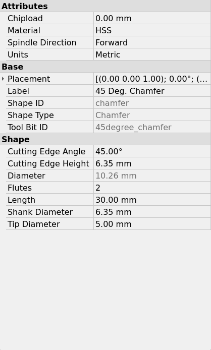
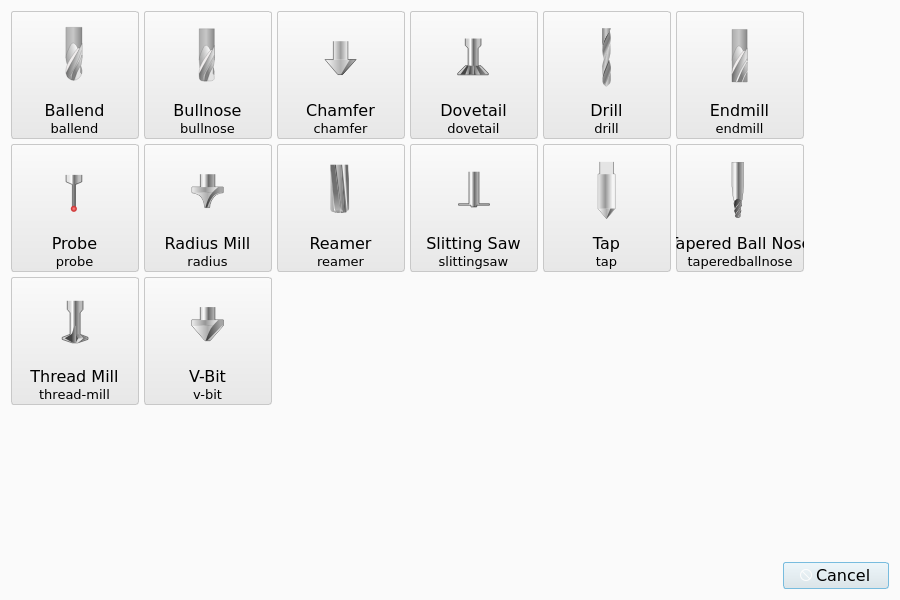
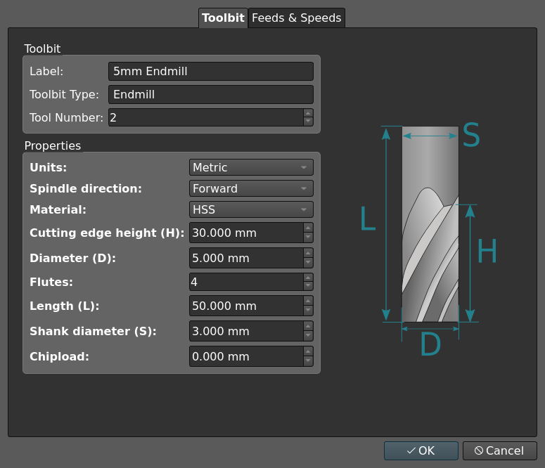
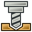

Tool Shape
Overview
A Tool Shape is the template from which the CAM workbench makes a Tool Bit. The Tool Shape gives the physical shape of the Tool Bit and the names of its parameters. The Tool Shape does not give the dimensions of one Tool Bit. The Tool Bit supplies the values of the parameters. See Tool Bit for the Tool Bit and its properties, and Tools for the other pages of this section.
A Tool Shape is a FreeCAD document with one Part Design Body and one PropertyBag that has the label Attributes.
The label of the Body selects the shape type.
The label must be the name or an alias of one of the shape types in Parameters.
If the label is a different text, the CAM workbench loads the shape as a Custom shape with a generic set of parameters.
An .svg drawing with the same name can be adjacent to each .fcstd file.
See Shape drawings.
Supplied Tool Shapes
FreeCAD supplies the Tool Shapes that are necessary for most work. The location of the supplied Tool Shapes is usually:
-
Linux:
/usr/lib64/FreeCAD/Mod/CAM/Tools/Shape -
Windows:
C:\Program Files\FreeCAD\Mod\CAM\Tools\Shape -
macOS:
/Applications/FreeCAD.app/Contents/Resources/Mod/CAM/Tools/Shape
The supplied Tool Shapes are:
-
ballend.fcstd -
bullnose.fcstd -
chamfer.fcstd -
introduced in 1.1
dovetail.fcstd -
drill.fcstd -
endmill.fcstd -
probe.fcstd -
introduced in 1.1
radius.fcstd, a mill that rounds a corner -
introduced in 1.1
reamer.fcstd -
slittingsaw.fcstd -
introduced in 1.1
tap.fcstd -
introduced in 26.3
taperedballnose.fcstd -
thread-mill.fcstd -
v-bit.fcstd
The CAM workbench stores your own Tool Shapes in the Tools/Shape folder of the CAM asset directory.
sets the asset directory. See CAM Preferences.
A Tool Shape in this folder replaces a supplied Tool Shape with the same file name in the Toolbit Shape Selection dialog.
Parameters
The shape type sets the parameters that a Tool Bit of this shape has. Each parameter is a property in the Shape group of the Tool Bit.
-
Endmill:CuttingEdgeHeight,Diameter,Flutes,Length,ShankDiameter. -
Ballend:CuttingEdgeHeight,Diameter,Flutes,Length,ShankDiameter. -
Bullnose:CuttingEdgeHeight,Diameter,Flutes,Length,ShankDiameter,CornerRadius. The CAM workbench converts a file that usesFlatRadius. -
Chamfer:CuttingEdgeAngle,CuttingEdgeHeight,Diameter,Flutes,Length,ShankDiameter,TipDiameter. -
VBit:CuttingEdgeAngle,CuttingEdgeHeight,Diameter,Flutes,Length,ShankDiameter,TipDiameter. -
Drill:Diameter,Flutes,Length,TipAngle. -
Dovetail:TipDiameter(crest height),CuttingEdgeAngle,CuttingEdgeHeight(dovetail height),Diameter(major diameter),Flutes,Length,NeckDiameter,NeckHeight,ShankDiameter. -
Reamer:CuttingEdgeHeight,Diameter,Length,ShankDiameter. -
SlittingSaw:BladeThickness,CapDiameter,CapHeight,Diameter,Flutes,Length,ShankDiameter. -
Tap:CuttingEdgeLength,Diameter,Flutes,Length,ShankDiameter,TipAngle,Pitch. -
ThreadMill:Crest,Diameter,Flutes,Length,NeckDiameter,NeckLength,ShankDiameter,cuttingAngle. -
Probe:Diameter(ball diameter),Length,ShaftDiameter. -
introduced in 26.3
TaperedBallNose:CuttingEdgeHeight,Diameter,Flutes,Length,ShankDiameter,TaperAngle,TaperDiameter. -
Radius:CuttingEdgeHeight,Diameter,CuttingRadius,Flutes,Length,ShankDiameter,TipDiameter. -
Custom(each other Body label):CuttingEdgeHeight,Diameter,Flutes,Length,ShankDiameterand each property of theAttributesPropertyBag.
introduced in 26.3: A shape type can have derived parameters. The CAM workbench calculates a derived parameter from the other parameters of the shape. A derived parameter is a property of the Tool Bit, and the property is read-only in the property editor. The CAM workbench calculates the value again when a parameter of the shape changes.
introduced in 26.3: The Diameter parameter of the Chamfer shape is a derived parameter.
The value is TipDiameter + 2 * CuttingEdgeHeight * tan(CuttingEdgeAngle / 2).
The sketch of the Chamfer shape uses TipDiameter, CuttingEdgeHeight and CuttingEdgeAngle, and does not use Diameter.
The figure shows the read-only Diameter property of a Chamfer Tool Bit in the property editor.

Aliases and subtypes
The CAM workbench compares shape names without case and accepts aliases. Examples of aliases are:
-
torusforBullnose -
filletforRadius -
v_bitforVBit -
conicalballnoseforTaperedBallNose
introduced in 26.3: A shape type can have subtypes.
The Drill shape has the subtypes jobber, stub, spot, center and brad_point.
A subtype does not change the parameters.
The Tool Bit file stores the subtype in its shape-type key.
You select the subtype as Toolbit Type in the Toolbit Parameter Editor dialog.
The Toolbit Library Manager uses the subtype as a filter.
Shape drawings
The shape drawing is the .svg file that has the same name as the .fcstd file of the Tool Shape.
The shape drawing shows the Tool Bit artwork and the dimensions of the parameters.
Each dimension has a label, a dimension line with arrows, and extension lines.
The Toolbit Parameter Editor dialog shows the shape drawing with its dimensions.
See Tool Bit for the connection between the dimensions and the fields of the editor.
The figure shows the shape drawing of the Endmill shape on a light theme.

The labels of the shape drawing supply the abbreviations that the editor shows adjacent to the parameters, for example D, L and H.
introduced in 26.3: The small icons do not show the dimensions. The buttons of the Toolbit Shape Selection dialog and the Tool Bit lists show only the Tool Bit artwork.

Theme colors
introduced in 26.3: The CAM workbench changes the colors of the shape drawing for the active theme before it shows the drawing.
-
The dimensions get the dimension color of a light theme or the dimension color of a dark theme.
-
On a dark theme, the CAM workbench makes each color of the Tool Bit artwork darker.
-
The dimension that you point at in the editor gets the highlight color.
The figure shows the same shape drawing on a dark theme.

The CAM preferences set the dimension colors, the highlight color and the brightness of the Tool Bit artwork. A change of these preferences is in effect immediately. See CAM Preferences.
Rules for a shape drawing
The CAM workbench reads these items from the .svg file:
-
Label: a
<text>element, or a<g>element that has anaria-labelattribute. The abbreviation is the text of the<text>element or the value of thearia-labelattribute. -
Label ID: the
idof the label is the parameter name in lower case, with an underscore between the words. For example,diameteris the label ofDiameter, andshank_diameteris the label ofShankDiameter. -
introduced in 26.3 Dimension colors: a dimension on the empty background has the color
#ff0000. A dimension on the body of the Tool Bit has the color#00ff00. The CAM workbench replaces these two colors with the dimension color of the theme. -
introduced in 26.3 Artwork colors: the CAM workbench uses each other color as Tool Bit artwork. Do not use
#ff0000or#00ff00in the Tool Bit artwork. -
introduced in 26.3 Dimension group: a
<g>element with theiddim-and the label ID, for exampledim-shank_diameter. The group contains the dimension line and the extension lines of this dimension. -
introduced in 26.3 Shared element: an element that is not in a dimension group can name its dimensions in its
classattribute, for exampleclass="dim-length dim-diameter".
introduced in 26.3: The editor highlights all elements of a dimension together.
If a label has no dimension group and no class entry, the dimension has only the label.
The editor does not highlight an arrow marker that two dimensions use.
Thumbnail
If no .svg drawing is adjacent to the shape file, the CAM workbench uses the thumbnail in the .fcstd file as the icon.
The CAM workbench shows a thumbnail without changes for the theme.
The thumbnail shows the 3D view as it is when you save the document.
Before you save the Tool Shape document, do these steps:
-
Open .
-
Set Save Thumbnail.
-
Clear Add program logo.
-
Set the 3D view to the front view.
-
Fit the content to the screen.
Create a Tool Shape
The supplied Tool Shapes are sufficient for most work. This procedure makes a new Tool Shape.
-
Create a new FreeCAD document.
-
Open the
 Part Design workbench.
Part Design workbench. -
Create a Body. Give the Body the label that the Tool Bit selection must show. For a known shape type, the label must be the name or an alias of this type.
-
Create a Sketch on the XZ plane. Draw one half of the profile of the Tool Bit.
-
Constrain the lowest center point of the Tool Bit to the origin
(0,0). This point is on the axis about which the Tool Bit turns. Do not add dimensional constraints in this step. -
Close the Sketch.
-
Revolve the Sketch about the vertical axis of the Sketch.
-
Open the

CAM workbench. -
Select the Body in the tree view. The CAM workbench then puts the new PropertyBag in the Body.
-
Select . The CAM workbench creates a PropertyBag with the name
Attributes. Do not change this label. -
Double-click the PropertyBag in the tree view. The Property Bag task panel opens.
-
Press Add…. The Create Property dialog opens.
-
Enter the name of the property. A name is case-sensitive and cannot contain spaces.
-
Select
Shapein the Group list. -
Select the applicable Type.
-
If necessary, enter a ToolTip.
-
Press OK.
-
Enter a value for the property in the Property Bag task panel.
-
Do the steps from Add… again for each other dimension of the shape.
-
Press OK in the Property Bag task panel.
-
Double-click the Sketch in the tree view.
-
Add the dimensional constraints, and bind each constraint to a property of the PropertyBag. For example, for the
Diameterproperty:-
Double-click a dimension.
-
Click the icon.
-
Enter
[Attributes].Diameterin the Formula editor. -
Press OK two times.
-
-
Continue until the Sketch is fully constrained.
-
Save the file as
<name>.fcstdin theTools/Shapefolder of the CAM asset directory. -
If necessary, add a
<name>.svgdrawing in the same folder. See Shape drawings.
The PropertyBag controls the dimensions of the Sketch. Obey these rules for the properties:
-
Create the properties
DiameterandLength. The Operations and the LinuxCNC export read these two properties. -
Put each dimension that controls the Sketch into the
Shapeproperty group. -
If the Body label is the name of a known shape type, use the parameter names of this type.
-
The CAM workbench copies each other property to the Tool Bit as a custom property.
Create only one Body, and create the Body before all other objects. The CAM workbench reads the label of the object that has the internal name Body.
|